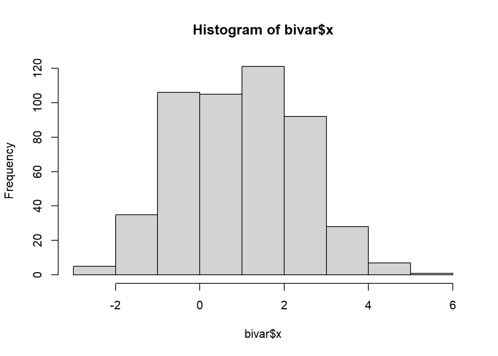
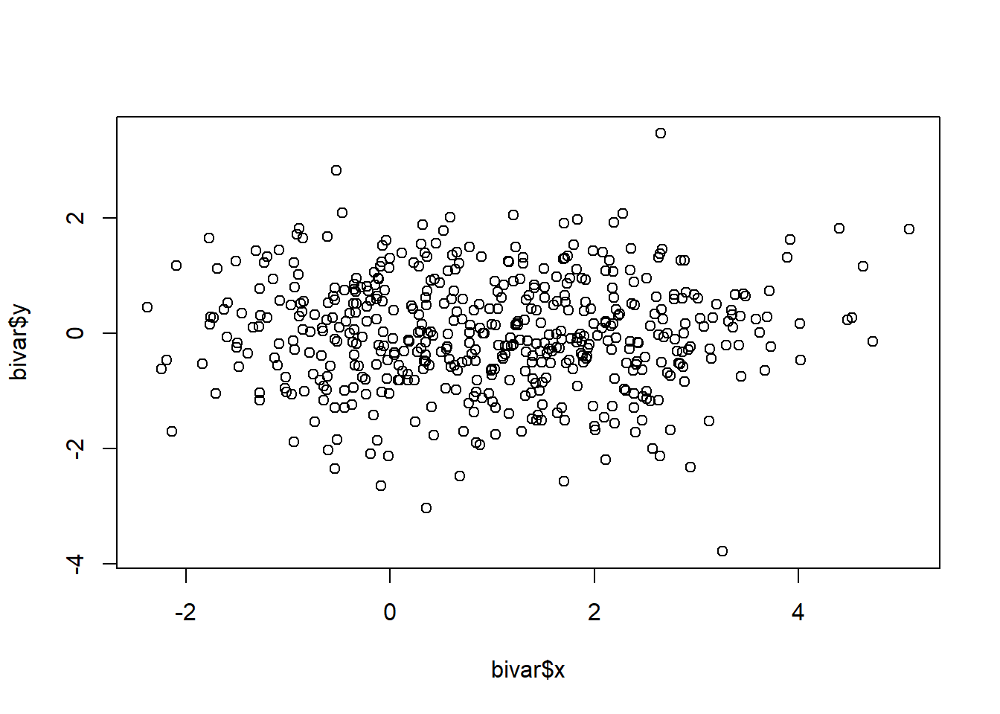
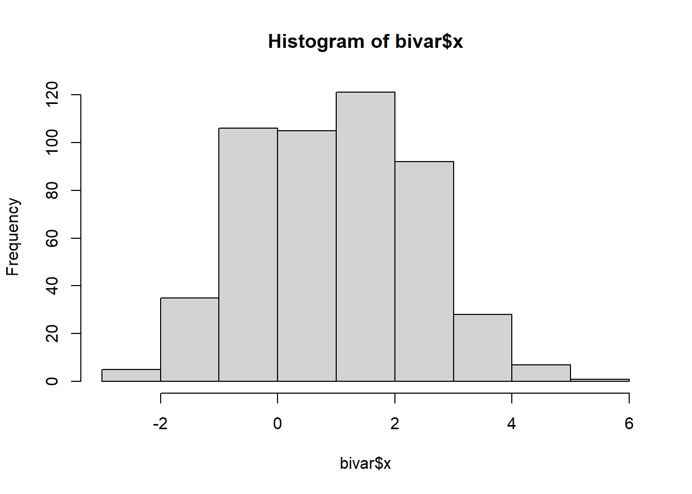
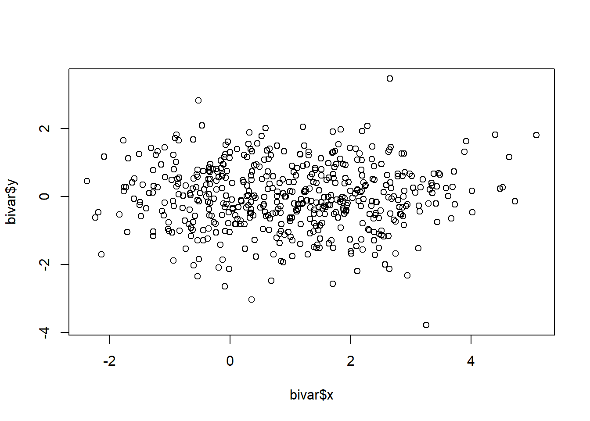
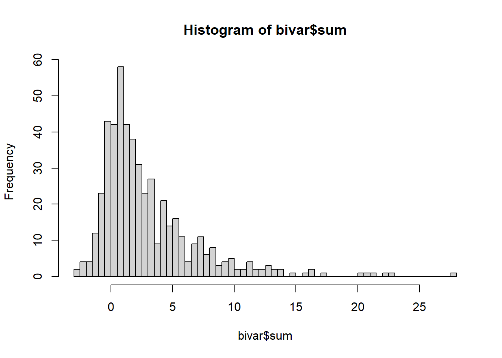

'data.frame': 500 obs. of 4 variables:
$ X : int 1 2 3 4 5 6 7 8 9 10 ...
$ x : num 3.59 1.99 2.89 1.88 2.11 ...
$ y : num 0.243 -1.26 0.17 -0.135 -2.197 ...
$ grupo: chr "A" "A" "A" "A" ...

Quarto enables you to weave together content and executable code into a finished document. To learn more about Quarto see https://quarto.org.
When you click the Render button a document will be generated that includes both content and the output of embedded code. You can embed code like this:
#Histograma de bivar ‘x’ e correlação entre bivar ‘x’ e bivar ‘y’.
Comentário gigantesco acerca do tema:
'data.frame': 500 obs. of 4 variables:
$ X : int 1 2 3 4 5 6 7 8 9 10 ...
$ x : num 3.59 1.99 2.89 1.88 2.11 ...
$ y : num 0.243 -1.26 0.17 -0.135 -2.197 ...
$ grupo: chr "A" "A" "A" "A" ...

Criando coluna que soma o quadrado de x com y (+)
Apresentação dos quartis, valores extremos e média da coluna (+)
Apresentação do histograma dos valores da coluna soma.
bivar$sum <- (bivar$x)^2 + bivar$y
head(bivar) X x y grupo sum
1 1 3.585920 0.2426292 A 13.101454
2 2 1.987162 -1.2595920 A 2.689222
3 3 2.893514 0.1701372 A 8.542562
4 4 1.876298 -0.1349269 A 3.385569
5 5 2.113682 -2.1965902 A 2.271060
6 6 1.249782 0.2023190 A 1.764274summary(bivar$sum) Min. 1st Qu. Median Mean 3rd Qu. Max.
-2.9164 0.4466 1.7302 2.9958 4.4063 27.6603 hist(bivar$sum, breaks = 100)
| Col1 | Col2 | Col3 |
|---|---|---|
| X | O | O |
| NA | X | O |
| O | X | X |
Se pegarmos os valores de a divisão de 11 (dias) por 9 (mês de setembro), temos que
\(11/9 = 1.2222222\)
1.22222 é nada mais do que:
1 + 0.22
22 é o número conhecido como “2 patinhos na lagoa”
O que reforça a ligação dos patos como os reais mandantes do atentado.
Para mais informações leiam: (Pöysä et al. 2016)